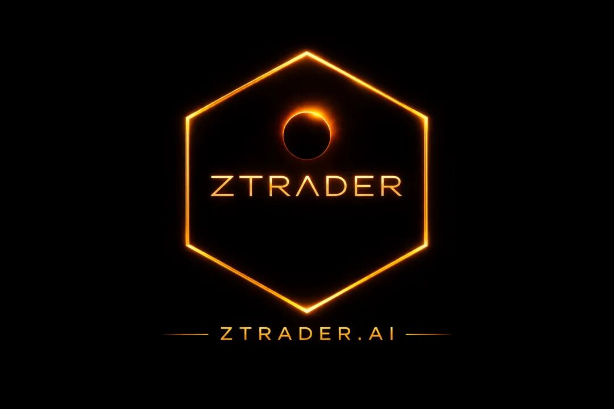
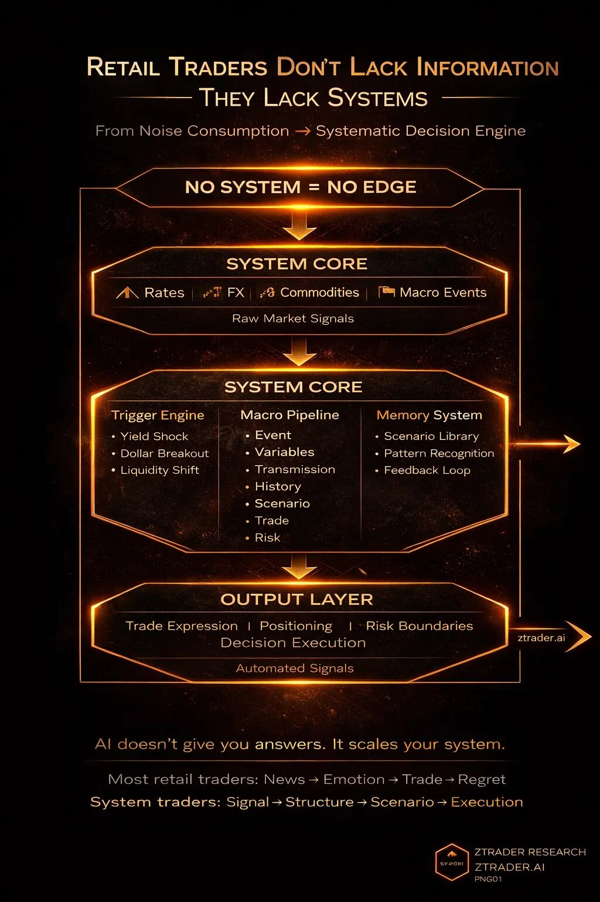

前文：
普通交易者如何用AI建立自己的宏观框架02 ： 建立底层工作流
我是如何一个人建出一个「迷你彭博终端」的（以及这一年我和服务器、矿毒、Auth系统的战争）
本公众号随时可能被删被和谐，请后台私信邮箱防失联。
每天养成打开文章，一起和我速推爆产能！
学习AI加入超级产能社群请在后台私信社群，1299/年，白褥勿扰。
搜索星球号：23835731
星球名称：AI量化研究
本号为国际平台，同时在medium/substack等皆有更新，关注读者为国际社群，现主要付费入口为substack 和会员网站入口。
请转发，点赞以及在看，你们的支持是我更新的动力。无赞者必拉黑，要API者必拉黑。
2000阅读/1000赞自动解锁下一篇内容，没阅读没赞不更新，拒绝白嫖，从我做起
——把投研流程，变成可以自动运转的研究引擎
一、先给你10条可以直接用的AI投研Prompt（拿去就能用）
别再问那些“市场会不会涨”。
你问的问题，决定你永远在什么层级。
下面这10条，是你可以每天直接用的：
1. 宏观事件拆解
请拆解【某个宏观事件】影响的关键变量，并按重要性排序。
2. 变量传导路径
这些变量之间如何传导？请用因果链形式表达。
3. 市场结构影响
这些变量变化，会如何影响：
利率
汇率
股市
商品
4. 历史类似情景
历史上是否出现过类似结构？对应市场表现如何？
5. 情景推演（关键）
如果【变量A发生】但【变量B不跟随】，意味着什么？
6. 市场在交易什么
当前市场最可能在交易的核心逻辑是什么？是否与表面新闻一致？
7. 交易表达
如果上述逻辑成立，对应的交易路径是什么？
（标的 + 方向 + 逻辑）
8. 反向推演
如果这个逻辑是错的，最可能错在哪里？
9. 风险失效条件
哪些变量变化，说明这个交易逻辑已经失效？
10. 压缩总结（做笔记用）
请用3句话总结：
当前结构
核心驱动
交易方向
这10条，不是“提示词”。
这是：
一个最小可用投研系统。
如果你只是拿去问一两次：
没用。
如果你每天用：
三个月后，你会开始意识到一件事：
大多数人根本不知道自己在看什么。
（更多进阶 Prompt / 自动化流程 / 数据接入 / 策略模板，文末有入口）
二、你以为你有流程，其实你只有“习惯性乱看”
上一篇我们讲流程。
但大多数人看完会产生一个错觉：
“我懂了。”
实际上你只是：
多了一套可以偶尔用的分析步骤
并没有建立系统
真正的差距不在于：
你会不会分析。
而在于：
你的分析，能不能持续运行。
三、流程 vs 系统（99%的人死在这里）
你的流程：
宏观事件
→ 变量拆解
→ 传导路径
→ 历史参考
→ 情景推演
→ 交易表达
→ 失效条件 很好。
但这是：
手动模式。
而机构在做的是：
自动运行的系统。
系统 = 流程 + 三个核心层：
记忆层（Memory）
触发层（Trigger）
执行层（Execution）
没有这三层：
你每天都是从零开始。
四、真正的AI宏观系统结构
[数据输入层]
↓
[事件触发层]
↓
[宏观研究流程（6步）]
↓
[情景库]
↓
[交易映射层]
↓
[风险控制层]
↓
[反馈系统]

这不是理论。
这是机构每天在跑的东西。
只是他们不会发公众号。
五、数据输入层（别再乱刷新闻）
你现在的问题不是信息少。
是：
输入是随机的。
你必须固定输入：
利率（美债）
美元（DXY）
商品（油/金）
信用利差
宏观事件（央行/政策）
AI的作用：
压缩信息
提取变量
标准化输入
你不是在看新闻。
你是在：
喂系统。
六、事件触发层（决定你有没有领先市场）
你必须定义：
什么叫“值得分析”。
例如：
利率变动超过某阈值
汇率突破区间
商品异常波动
流动性变化
触发 → 才分析
没有触发机制：
你就是被市场拖着走。
七、流程层（现在才有意义）
当流程被触发后：
它才真正有价值。
AI在这里的作用：
快速建模变量
生成因果链
推演情景
你不再猜涨跌。
你在运行：
结构模型。
八、情景库（真正的护城河）
普通交易者没有记忆。
你必须记录：
事件
变量
情景
结果
这会变成：
你的“认知数据库”。
AI可以：
帮你检索历史结构
做对比
提炼规律
这一步，决定你是否会进化。
九、交易映射（很多人不敢做）
分析很安全。
交易要承担责任。
你必须强制：
情景 → 交易表达
否则你只是：
一个会分析但赚不到钱的人。
十、风险系统（真正的分水岭）
普通人问：
会不会涨？
专业交易者问：
我什么时候错？
你必须定义：
失效条件
时间窗口
结构变化
AI可以帮你：
找漏洞
推演反向路径
风险不是保护，
是让你活下来。
十一、反馈系统（认知复利开始）
每次之后你必须问：
哪里错了？
哪个变量关键？
哪个逻辑有效？
然后写回系统。
你优化的不是交易。
是：
你的判断函数。
是你的判断力。
十二、AI真正的用法
普通人：
问答案。
高手：
让AI参与过程。
AI擅长：
扫描
推演
压缩
建模
AI不是预测工具。
是：
认知外骨骼。
十三、每日最小执行框架
每天只做5件事：
找一个触发事件
跑6步流程
写情景 + 交易
定义风险
复盘
最后，
市场不奖励信息。
市场奖励：
结构清晰的人。
没有系统：
AI是噪音放大器。
有系统：
AI是杠杆。
如果你认真跑这套东西30天：
你会开始看懂市场。
90天：
你会开始形成判断力
一年：
你会拥有一套自己的系统。
大多数人做不到。
不是因为难。
是因为：
他们不会坚持做对的事情。
如果你想要：
更高阶 Prompt（事件自动识别 / 多资产联动 / 策略生成）
完整数据管线（macro → signal → trade）
可直接用的策略模板（期权 / 宏观 / 波动率）
AI自动投研工作流
后台私信：加入付费社群
我只对一类人开放：
愿意把“看市场”，升级成“做系统”的人。